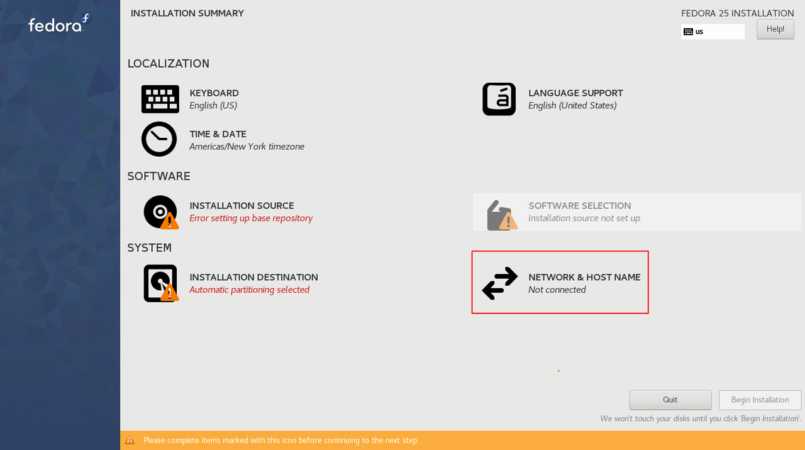
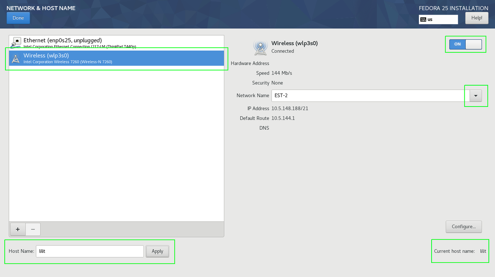
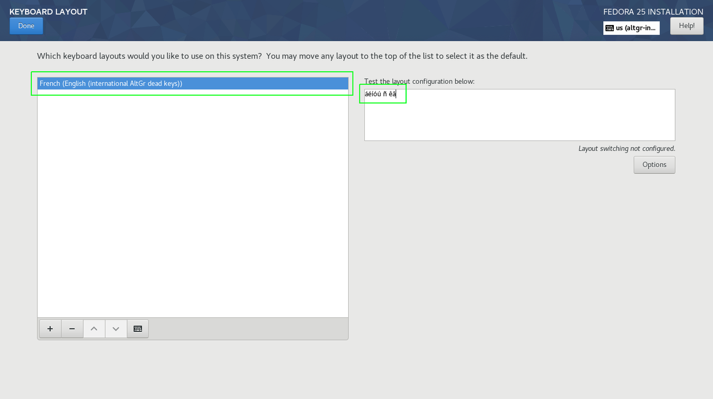
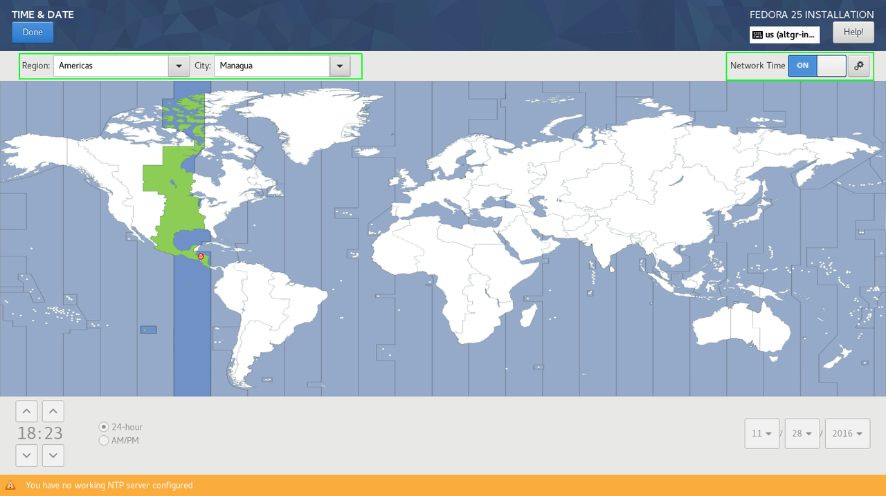
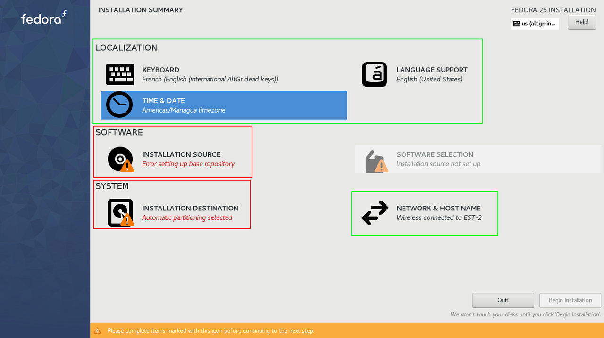
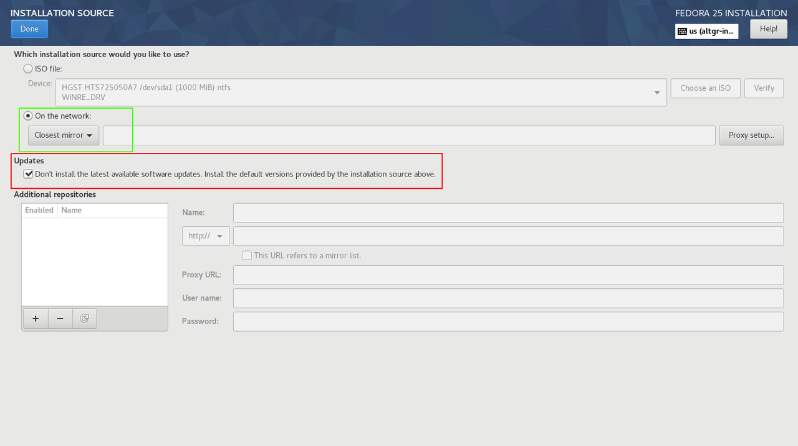
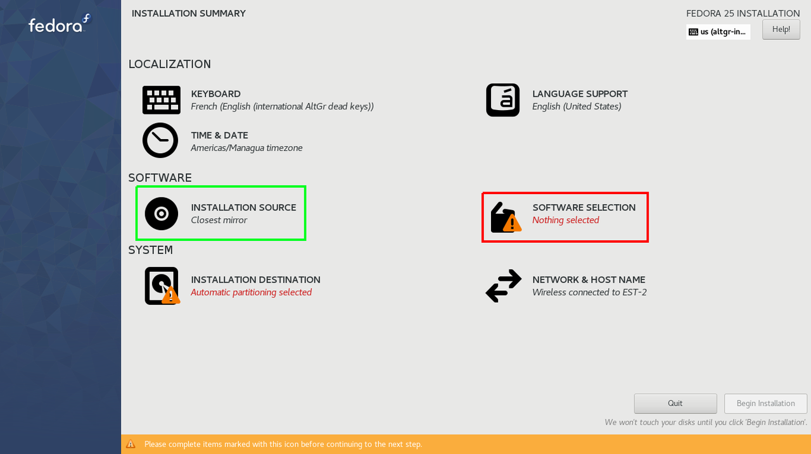

Anaconda y LVM sobre LUKS
Previamente había actualizado mi laptop de Fedora 22 a Fedora 23, desde hace más de 6 meses, también es posible reutilizar las particiones creadas para fc22 de forma que en ellas pudiera instalar la nueva versión de Fedora 25 y conservar todos los archivos contenidos en el Volumen Lógico que sirve como /home.
En el siguiente post explicaré como lograr esto sin comprometer la integridad de nuestra información ni los demás sistemas operativos instalados en nuestro equipo.
Como vimos en el post anterior, también es posible hacer un upgrade, es genial tener la posibilidad de poder hacer esto, pero la idea de descargar todos paquetes, para luego actualizarlos de una vez, es algo que no sé si quiera hacer, francamente hacer fresh installs y configurar todo a como estaba es algo que me gusta y disfruto hacer. También representa menor carga para el equipo, ya que solo descarga los paquetes mínimos para tener un sitema funcional, todo lo demás que eventualmente pueda necesitar lo puedo instalar en demanda.
Considerando que todos los archivos contenidos en tus sistemas cuentan con su su debido respaldo, podemos empezar con el proceso de instalación sin miedo a que algo salga mal, nunca se sabe que podría salir mal hasta que sale mal XD.
Creando un medio de instalación
El primer paso es crear un medio de instalación, para ello debemos decargar el archivo ISO de Fedora 25. Desde Fedora 21 he estado usando la imagen netinstall , de acuerdo con el capítulo 2 de la Guía de Instalación de Fedora:
"La imagen iso netinstall se inicia directamente en el entorno de instalación y utiliza los repositorios de paquetes Fedora en línea como fuente de instalación. Con una imagen netinstall, se puede seleccionar una amplia variedad de paquetes para crear una instalación personalizada de Fedora. La imagen de Netinstall de Fedora Server es universal y puede utilizarse para instalar cualquier sabor de Fedora o su propio conjunto de paquetes favoritos."
Descargando la imagen Everything netinstall
Yo prefiero usar la imagen ISO netinstall de Fedora Everything.
Aparentemente, la imagen Everything netinstall no cuenta con servidor de torrents para su descarga:
https://torrent.fedoraproject.org/
Por lo que deberemos usar el método convencional de descarga directa, para ello nos auxiliaremos de la línea de comandos.
Para sistemas de 32 bits descargar la siguiente imagen:
wget -N -t 0 -c https://download.fedoraproject.org/pub/fedora/linux/releases/25/Everything/i386/iso/Fedora-Everything-netinst-i386-25-1.3.iso
Para sistemas de 64 bits descargar la siguiente imagen:
wget -N -t 0 -c https://download.fedoraproject.org/pub/fedora/linux/releases/25/Everything/x86_64/iso/Fedora-Everything-netinst-x86_64-25-1.3.iso
- Donde:
-
-N descarga el archivo con las mismas marcas de tiempo de dia y hora con la que fue subido a los servidores.
-t 0 en caso de que la descarga se vea interrumpida por problemas de conexión hará un intento automático de reconexión, si dejamos el tiempo en 0 hará la reconexión de forma inmediata.
-c indica que la descarga debe ser continuada en el byte que quedó pendiente al momento que la descarga se viera interrumpida.
Esta es una pequeña medida de contingencia en caso que no contemos con acceso a una red lo suficiente estable.
También podemos verificar la integridad de la imagen descargada usando el archivo checksum. Solo tenemos que descargar el archivo y guardarlo en el mismo directorio que contiene a la imagen ISO:
wget -N -t 0 -c https://alt.fedoraproject.org/es/static/checksums/Fedora-Everything-25-1.3-x86_64-CHECKSUM
Luego ejecutamos el siguiente comando:
sha256sum -c Fedora-Everything-25-1.3-x86_64-CHECKSUM
Grabando la imagen ISO en una USB
Para grabar la imagen ISO en una USB usaremos la herramienta Fedora Media Writer. Si estás usando Windows puedes instalar Fedora Media Writer usando el siguiente enlace:
https://getfedora.org/fmw/FedoraMediaWriter-win32-4.0.7.exe
Para MacOS:
https://getfedora.org/fmw/FedoraMediaWriter-osx-4.0.7.dmg
Si estás usando Fedora 23 o superior puedes instalar Fedora Media Writer con el siguinete comando:
su -c 'dnf install mediawriter'
Antes de ejecutar Fedora Media Writer es recomendable desconectar cualquier otro dispositivo de almacenamiento extraible que pueda estar conectado en nuestro equipo, esto para evitar posibles confusiones. Conectamos la memoria USB que usaremos y ejecutamos Fedora Media Writer.
La siguiente imagen es una captura de pantalla de Fedora Media Writer, de las opciones mostradas seleccionamos:
- Custom image.
- Navegamos hasta el directorio dónde se encuentre la imagen ISO previamente descargada.
- Seleccionamos la USB.
- Damos clic en Write to disk.
- Ingresamos nuestra contraseña de usuario si estamos en el grupo wheel o la de root en caso de que no seamos admins.
- Listo.
Arrancando desde la USB
En mi caso tengo configurada mi laptop para iniciar en UEFI mode y con Secure Boot activado.
Crear nuestro medio de instalación con Fedora Media Writer nos garantiza que el medio de instalación funcionará en cualquier posible escenario.
Para acceder al Administrador de arranque de mi laptop solo debo presionar la tecla Enter mientras se muestra el logo de Lenovo, este es un indicador, en mi caso, de que la máquina está arrancando en UEFI mode.
Iniciando el proceso de instalación de Fedora 25
Para esta sección del post haré uso de capturas de pantallas y una breve descripción de las mismas.
Nos enfocaremos principalmente en la etapa de particionado, pero primero lo primero, la conexión a Internet.
Los medios de instalación creados a partir de imágenes netinstall dependen exclusivamente de una conexión a Internet, ya sea cableada vía puerto RJ45 (Ethernet) o vía Wireless (Usando nuestra tarjeta WiFi), en mi caso el medio de instalación netinstall detecta ambas tarjetas de red. Los netinstall de Fedora contienen un conjunto de driveres que nos permiten hacer usos de ciertos periféricos, en caso de no ser detectada nuestra tarjeta de red WiFi puede que nuestro dispositivo no sea soportado por Fedora, esto es por razones legales. Fedora solo incluye controladores libres o que sus fabricantes hacen explícita mención sobre su política de uso y distribución.
Mi T440p viene equipada con una tarjeta red cableada Intel® Ethernet Connection I217-LM y una tarjeta de red inalámbrica Intel® Wireless-N 7260 , ambas tarjetas fueron detectadas durante la instalación, en la oficina solo tengo acceso a redes WiFi por lo que usé la tarjeta Wireless.
En esta primer imagen del resumen de instalación, lo primero que debemos hacer es conectarnos a alguna de las redes disponibles ya sea que usemos una red cableada o una red WiFi, para ello damos clic en la opción NETWORK & HOST NAME.
A continuación, selecionando Wireless y activando la tarjeta; seleccionamos una red de las que estén disponibles; cambiamos el nombre de nuestro equipo y damos clic en Apply...
damos clic en Done.
En la sección de LOCALIZATION añadí la distribución de teclado French (English (International AltGr dead keys)) y removí English (US).
Se puede apreciar una pequeña verificación, donde presionando la tecla AltGr + a y otras vocales el resultado es las vocales acentuadas.
En la sección TIME & DATE siempre habilito la opción Network Time...
también seleccionamos la Región y Ciudad en la que nos encontramos, ya que en base a ello se ajusta la hora y la fecha.
Hasta este momento ya tenemos configuradas las siguientes secciones:
Ahora debemos configurar la sección SOFTWARE, especificamente INSTALLATION SOURCE...
En esta sección marcamos On the Network: y seleccionamos Closest mirror, también nos aseguramos de desmarcar la opción Updates...
de esta forma el instalador usará los repositorios en línea para descargar los paquetes necesarios para la instalación, usando el servidor más cercano que por lo general no es el más cercano geográficamente, pero el más eficiente y con mejores tiempos en términos de transferencia de datos. Al desmarcar Updates le estamos diciendo al instalador que use los paquetes más recientes que estén disponibles en el repo.
Esperamos que se descarguen los metadatos de grupos de paquetes, del cual depende la sección SOFTWARE SELECTION:
En SOFTWARE SELECTION yo escogí Fedora Custom Operating System, el cual representa una selección de paquete muy mínima, sin etorno gráfico, solo unos pocos grupos de paquetes que son los siguientes:
Environment Group: Fedora Custom Operating System Environment-Id: custom-environment Description: Basic building block for a custom Fedora system. Mandatory Groups: Core Optional Groups: Guest Agents Standard
Finalmente hemos llegado a la sección
Comentarios
Comments powered by Disqus